Excelente experiencia. La kine Dani Rosales, fue muy profesional, amable y dedicada durante toda la atención. Me explicó todo con claridad, transmitió confianza y se preocupó por mi bienestar en todo momento. La recomiendo totalmente por su calidad humana y profesionalismo. ¡Muchas gracias por la atención!
Tu rehabilitación,
sin salir de casa
Kinesiología a domicilio en Santiago. Coordina una primera visita para ti o para un familiar.
-
Atención
en tu hogar -
Kinesiólogos
Expertos
Un equipo que te acompaña en cada paso de tu recuperación
- Profesionales
- 12
- Comunas
- 10
- Objetivo
- 1
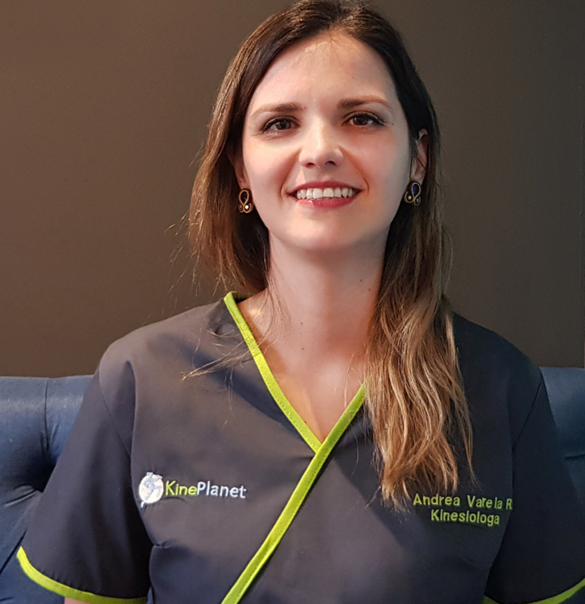
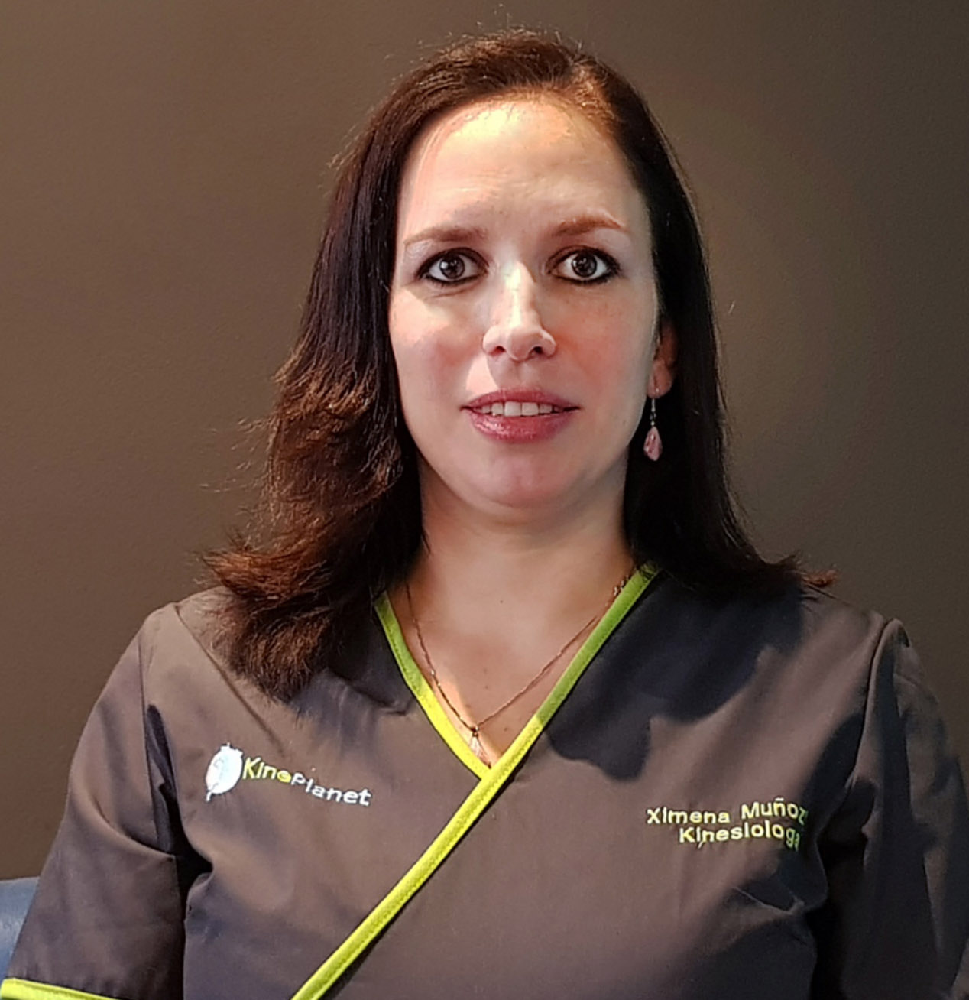
Desde 2012.
Acompañando la recuperación
de nuestros pacientes.
+40.000
Atenciones realizadas
en hogares de Santiago.
Lo que opinan
los pacientes de
Kineplanet.
Estoy muy agradecida de la terapia, Nicolas Lagos atendió a mi hijo por un cuadro de bronquitis y mejoró rápidamente gracias a él. El profesional fue muy atento y amable en explicarnos todo el proceso y atender a mi hijo con cariño. Totalmente recomendable, es una atención de excelente calidad, gracias!
barbara stuardo
Estoy muy satisfecha por la atencion , profesionalismo, paciencia de Cristian quien atendio a mi mama en la primera etapa de recuperacion luego de su protesis de cadera. Pude ver el progreso despues de cada sesion. Excelente y 100 % recomendado. Gracias.
Elier Cartes
Pude realizar mi rehabilitación de forma cómoda y efectiva. La atención fue excelente, y el proceso de reintegros resultó muy sencillo.
Fran Alba
La coordinación es rápida y el profesional fue muy amable, atento y responsable con las sesiones.
andrea ferreira
Matias atendió a mi hija por una lesión en la rodilla. Muy respetuoso y cordial.
Augusto Carrasco
Maravillosa atención, el kine muy atento y me iba explicando para qué los ejercicios y que íbamos progresando super bien. Super recimendado
Inge Eichhorns
Excelente atención, muy amables para coordinar tratamiento y con mucha paciencia para atender a adulto mayor. Un agrado haber encontrado esta empresa seria y con profesionales integrales. Kinesiologo Hector Rojas, espectacular, atendió a mi madre a domicilio durante 1 mes con muy buenos resultados.
Ignacio Rodriguez
Muy buena atención! Mi bebé le tiene miedo a las atenciones médicas por experiencias un poco traumatizantes para ella, pero el kinesiologo Fernando un 100, se ganó su confianza y mi bebé lo pasó bien en la terapia respiratoria, excelente profesional ♥️
constanza saldivar
Hacer mi tratamiento de kinesiologia a domicilio fue lo más acertado ; fui atendida por Hector excelente profesional. Nunca me imagine que a los 2 meses de mi cirugía de tobillo estaría caminando sin problemas. Gracias
Violeta Cordero Schneider
Muy buena experiencia y recomendable. Nicolas Lagos, mi Kinesiologo, muy profesional, me ayudó muchísimo en mi recuperación, explica de forma muy clara y didáctica el proceso de recuperación y la importancia de los ejercicios.
Catalina Reyes
Excelente experiencia tuvimos con mi hija de 6 años, Muy preocupado el kinesiologo Jean Salvo en que ella se sintiera cómoda y segura.
Daniela Garro
Estimados, Kineplanet, muy agradecidos por la atención y asistencia a nuestra madre Mercedes, de 95 años de edad.
Eliana P. Castillo
Kine Mauricio un 7. Pensé que seria una experiencia traumática para mi hijo, pero fue todo lo contrario. Muy profesional.
Natalia Bustamante Verdejo
Súper profesional la kine que nos toco llamada Vanessa, siempre puntual y demasiado amorosa con mi bebé… muy clara y amable con la info que nos dió.
Cintia Montupil
Cuidamos tu movimiento. Acompañamos tu vida.
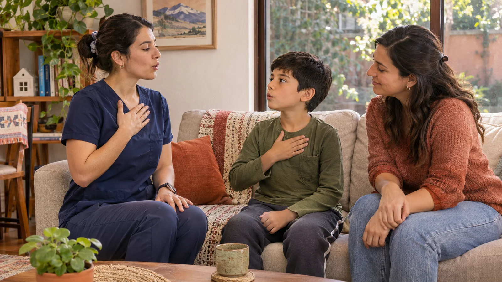
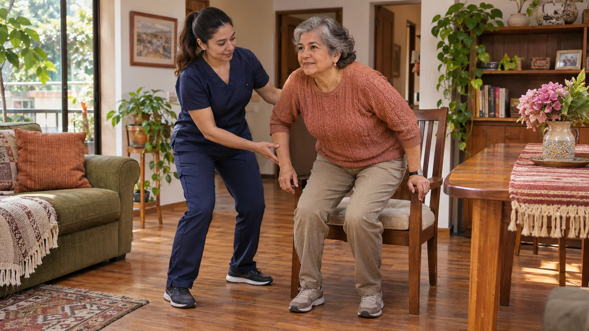
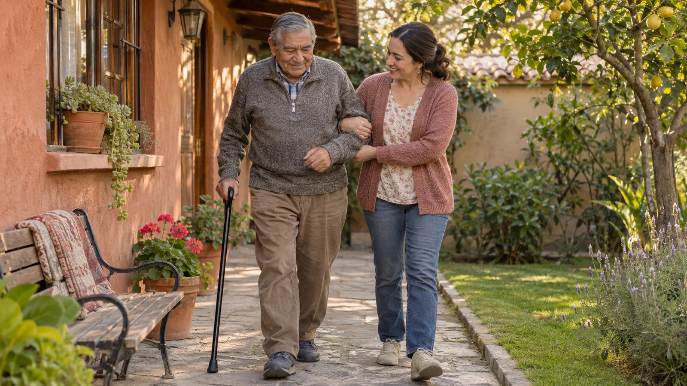
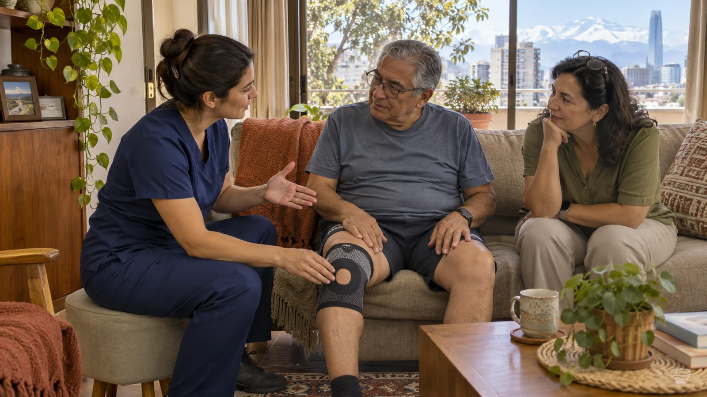
Kinesiología en casa, desde la infancia hasta la vejez.
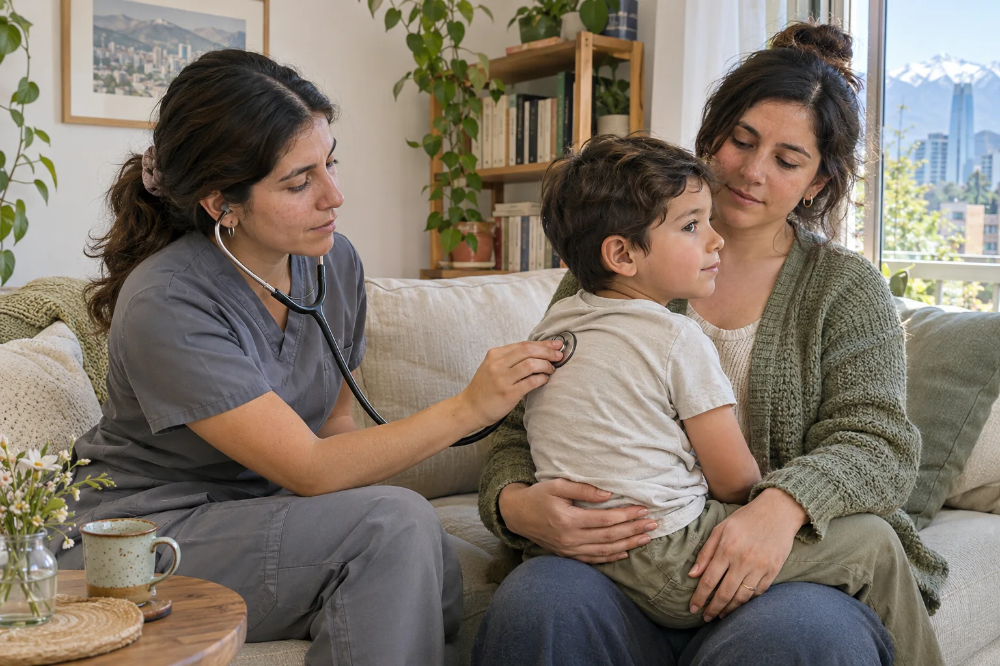
Respiratoria
Atención en casa para niños y adultos con afecciones respiratorias. Adaptamos la sesión a la evaluación y a la indicación médica cuando corresponde.
Consultar por WhatsApp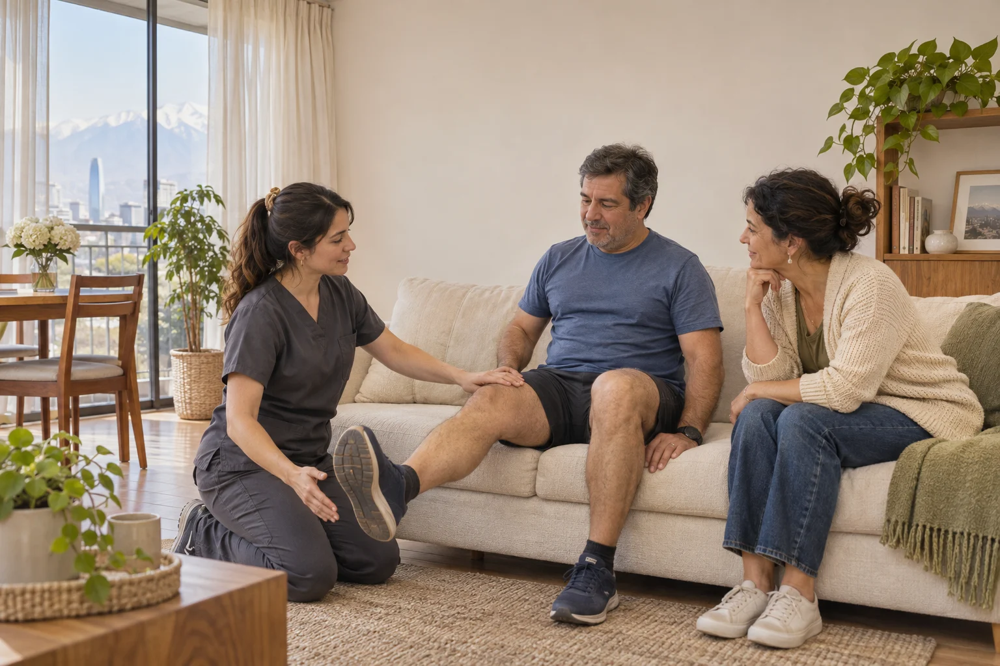
Traumatológica y musculoesquelética
Trabajamos la movilidad y la función después de una lesión o cirugía, o cuando el dolor muscular, articular o de columna dificulta tus actividades.
Consultar por WhatsApp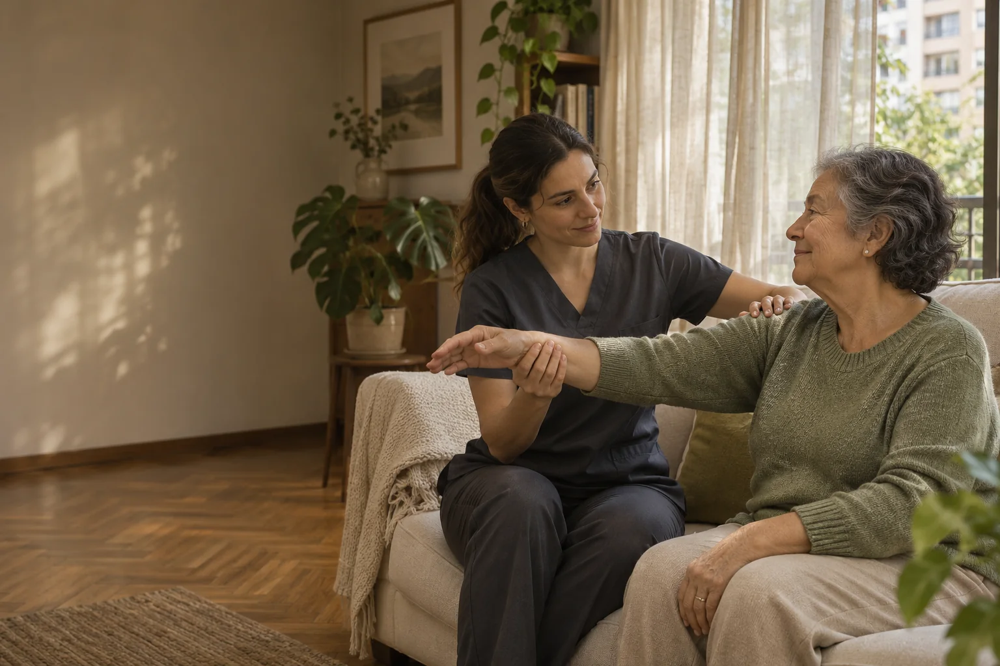
Neurológica
Trabajamos la marcha y el equilibrio para facilitar las actividades cotidianas de personas con Parkinson, secuelas de un accidente cerebrovascular u otras condiciones neurológicas.
Consultar por WhatsApp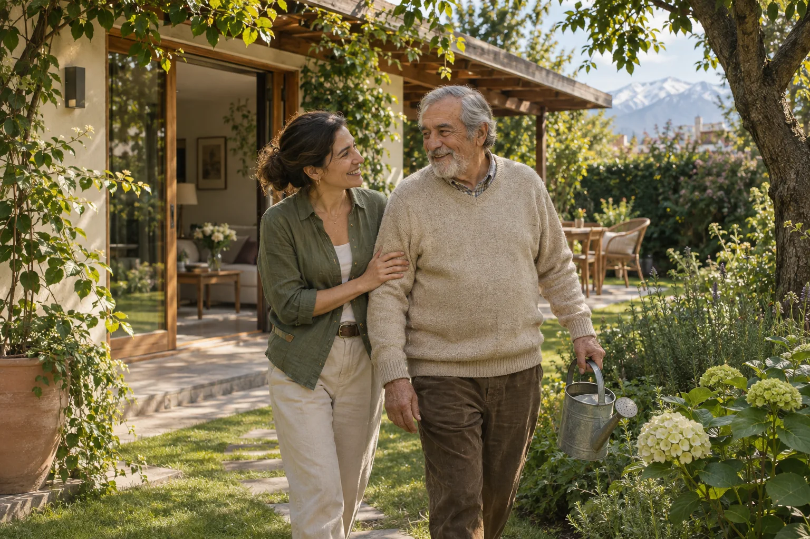
Adulto mayor
Ejercicios de fuerza, equilibrio y marcha para conservar autonomía y reducir el riesgo de caídas en casa.
Consultar por WhatsApp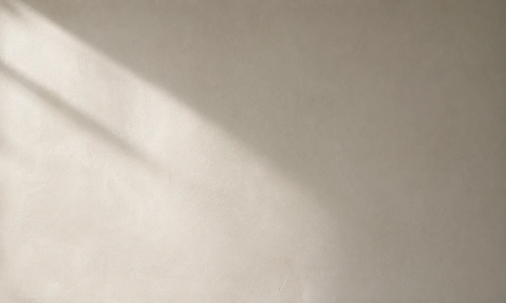
Estimulación temprana
Actividades adaptadas a la etapa de desarrollo motor de lactantes y niños pequeños, con orientación para padres y cuidadores.
Consultar por WhatsApp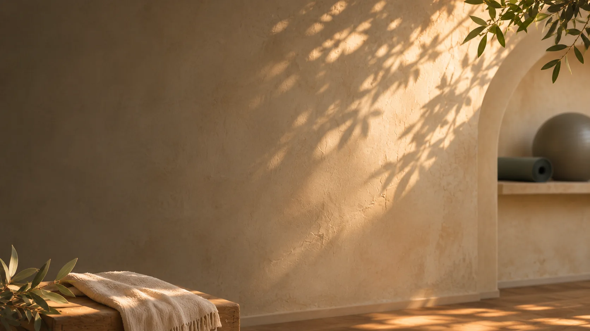
Masajes
Masajes de relajación y descontracturantes a domicilio para aliviar la tensión muscular.
Consultar por WhatsAppDe la primera conversación a un plan de recuperación en casa
Te escuchamos.
Cuéntanos por WhatsApp qué atención necesitas y en qué comuna. Puedes escribir por ti o por un familiar.
Lo coordinamos contigo.
Confirmamos cobertura, disponibilidad, valor y requisitos. Asignamos al profesional considerando tu necesidad y ubicación.
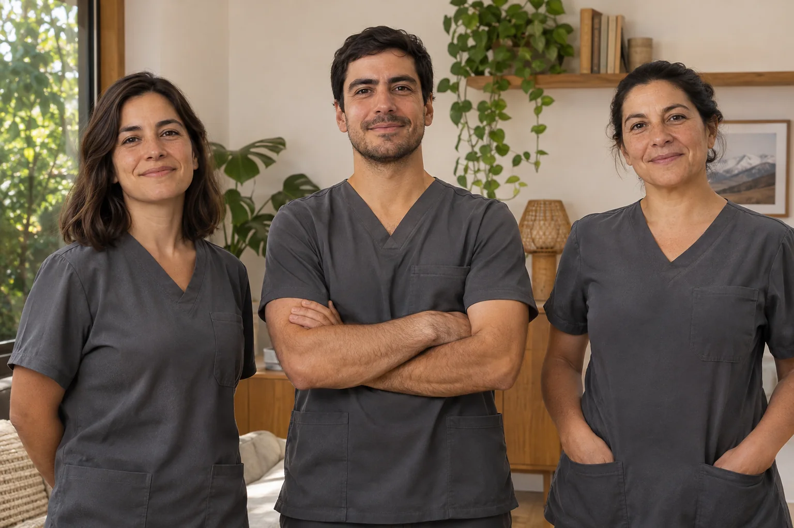
Nos conocemos en casa.
En la primera visita, el kinesiólogo evalúa tu situación y escucha tus objetivos, considerando la indicación médica cuando corresponde.
Trazamos tu plan.
Definimos una atención personalizada y te explicamos cómo acompañar el proceso. Los objetivos se ajustan a tu condición y evolución.
Agenda tu primera
sesión de evaluación
Conversación
Nos cuentas qué cambió, cuándo empezaron las molestias y qué te gustaría volver a hacer.
Evaluación
Observamos cómo te mueves en casa y revisamos tu movilidad, fuerza o equilibrio según el motivo de consulta.
Objetivos
Elegimos contigo qué trabajar primero, desde levantarte de una silla hasta volver a caminar con más confianza.
Plan
Te explicamos con qué empezar en casa y cómo iremos revisando tus avances.
Lo que necesitas saber antes de tu primera visita
¿Qué beneficios tiene la kinesiología a domicilio?
Recibes atención en tu casa y ahorras tiempo y gastos de traslado. Esto puede ser especialmente práctico si tienes movilidad reducida o dificultades para salir.
El kinesiólogo trabaja contigo de forma individual y adapta el plan a tus necesidades y a las actividades que haces en tu propio entorno.
¿Qué esperar de una sesión de kinesiología a domicilio?
La primera sesión comienza con una evaluación. A partir de ella, el kinesiólogo diseña contigo un plan de tratamiento según tus necesidades.
Según la evaluación, la sesión puede incluir ejercicios de movilidad o fortalecimiento, terapia manual o electroterapia. También puedes recibir ejercicios para practicar entre visitas.
¿Cuánto dura una sesión de kinesiología a domicilio?
La atención respiratoria dura aproximadamente 40 minutos, tanto en niños como en adultos. Las demás terapias suelen durar unos 50 minutos. La primera sesión puede ser más larga porque incluye la evaluación inicial.
¿Qué terapias se pueden realizar a domicilio?
Realizamos kinesiología respiratoria para niños y adultos, traumatológica, neurológica y del adulto mayor. También ofrecemos estimulación temprana, atención después de cirugía estética y masoterapia.
¿Cuál es la zona de cobertura?
Atendemos en la Región Metropolitana. Indícanos tu comuna para confirmar la cobertura y disponibilidad.
¿Cuáles son los horarios de atención?
Lunes a viernes de 8:00 a 20:00. Sábados y domingos de 9:00 a 20:00.
¿Qué formas de pago aceptan?
Efectivo, transferencia bancaria y tarjetas de crédito o débito a través de Webpay.
Guías para preparar tu atención en casa.
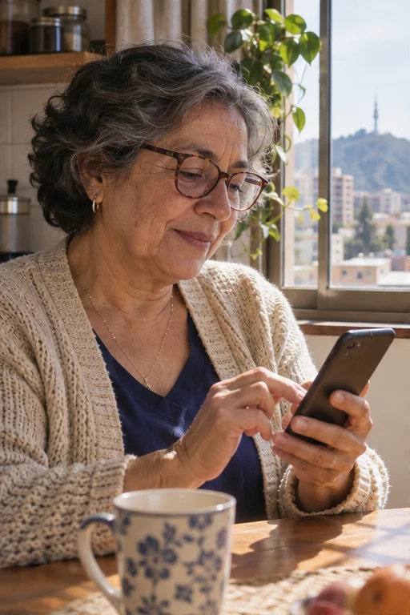
Qué contar al pedir una visita por WhatsApp
Indícanos tu comuna y el motivo de la consulta. Si escribes por un familiar, cuéntanos para quién es la atención y quién se encargará de coordinar.
Con esos datos revisamos la cobertura, el horario, los requisitos y el valor antes de programar una visita.
Qué pasa en la primera visita
En la primera visita conversamos sobre las actividades que te gustaría recuperar o hacer con más comodidad. La evaluación sirve para definir el plan y acordar cómo revisarlo.
Cómo coordinar una visita para un familiar
Antes de la visita puedes preguntar por el profesional, el horario y los requisitos. Si habrá familiares o cuidadores presentes, también pueden plantear sus dudas.